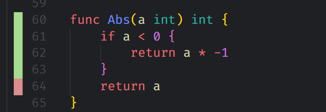
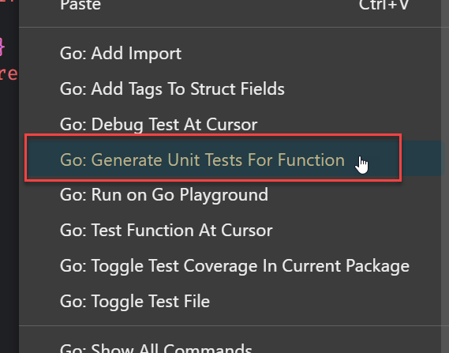
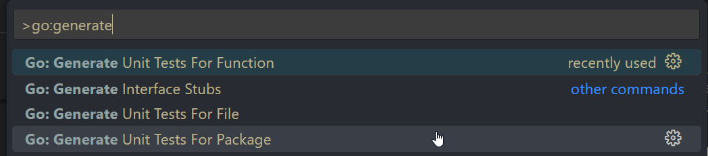

[Go] VSCode 內的 Test Coverage 設定小技巧
VSCode 應該是很多人的主開發工具，尤其在這個一個人要身兼多語言開發時，VSCode 真的是個不錯的選擇，而 Go 在 VSCode 上的開發體驗，搭配 Go Exntesion 後，真的沒什麼好挑剔的，但還是有些設定需要做調整，這篇會筆記一些近期針對測試部分所做的設定調整。
調整 Coverage 的顯示方式
-
開啟 Coverage 的顯示，先講效果

從畫面的左邊就可以知道有哪些程式尚未被覆蓋到，在撰寫 test case 時是很直覺的，設定方式如下
1
2
3
4
5
6
7
8"go.coverOnSave": true,
"go.coverageDecorator": {
"type": "gutter", // 預設是 hightlight
"coveredHighlightColor": "rgba(64,128,128,0.5)",
"uncoveredHighlightColor": "rgba(128,64,64,0.25)",
"coveredGutterStyle": "blockgreen",
"uncoveredGutterStyle": "blockred"
}coverOnSave: 設定為true時，在 save 檔案時會執行go test -coverprofilego.coverageDecorator.type有兩種模式，highlight和gutter，自己是比較偏愛gutter的模式，各位可以自己玩看看
額外發現
原來 Go extension 內有支援 generate unit test 的功能，這樣還有什麼理由不寫測試呢

或是用 command Palette 方式執行
